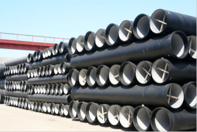

Flexible cast iron pipes are also called cast iron drainage pipes, flexible earthquake-resistant cast iron drainage pipes, and centrifugal cast iron drainage pipes. It has the advantages of easy layout, space saving, easy to cut, easy maintenance and replacement, etc.
Ductile iron is the successor to cast iron. Cast iron pipes were once frequently used in municipal utilities due to their cost-effectiveness and overall strength. However, this material was also heavy, prone to corrosion, and relatively brittle. To address these problems, ductile iron was introduced in the 1940s.

It was found that the addition of magnesium alloy to molten iron significantly changed the microstructure of the material and improved its mechanical properties. According to the ASTM standard for ductile iron casting, the chemical composition of ductile iron consists of 3.5-3.9% carbon and 2.25-3% silicon along with small percentages of manganese, magnesium, sulfur, phosphorus, etc.
Ductile iron maintains all the advantages of cast iron while improving on strength and ductility. This material also has a high strength to weight ratio, allowing lighter piping structures to be fabricated.
The difference between them:
1. Different materials
The flexible cast iron pipe is made of grey cast iron.
Ductile iron pipe refers to the material of ductile iron.
2. Different uses
Flexible cast iron pipe is used as a drainage pipe for underground or high-rise drainage of buildings.
Ductile iron pipe is a kind of water supply and drainage pipe used in cities, communities, municipal administration, firefighting and sewage pipes.
3. Different interface methods
There are 3 types of flexible cast iron pipe connection methods, A type, B type, W type, with flange connection, and stainless steel clamp connection.
The common way to connect ductile iron pipe is T-type socket interface.
4. Different installation methods
The flexible cast iron pipe is installed indoors or underground in buildings, and manual installation is sufficient.
Ductile iron pipes usually need to be installed mechanically.
5. Different national standards
National standard for flexible cast iron pipes: GB/T 12772 – 2008 ISO6594-2008
National Standard for Ductile Iron Pipe: GB/T 13295 – 2008 ISO2531-2008
6. Different pressure-bearing capacity
Flexible cast iron pipe withstand pressure≤0.4Mpa
Ductile iron pipe withstand pressure≥1.0Mpa
7. Different caliber unit (mm)
Flexible cast iron pipe caliber: 50, 75, 100, 150, 200, 250, 300 not larger than caliber 300
Ductile iron pipe diameter: 80, 100, 200, 250, 300, 400, 500, 600, 800, 1000, even more than the diameter of 2600
8. Different mechanical properties
Flexible cast iron pipe: grey cast iron is also cast iron with poor mechanical properties among common cast irons. Grey cast iron is divided into ≥HT250 and ≤HT220, and its density is 7.35 tons/cubic meter; and 7.2 tons/cubic meter, the hardness of ferrite in grey cast iron is about 100HBS. Elongation ≤ 2%.
Ductile iron pipe: tensile strength: ≥420/Mpa, yield strength ≥300/Mpa, elongation ≥7%, the hardness of ferrite in ductile iron is about 230HBS.